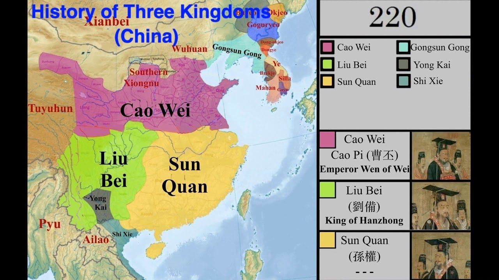
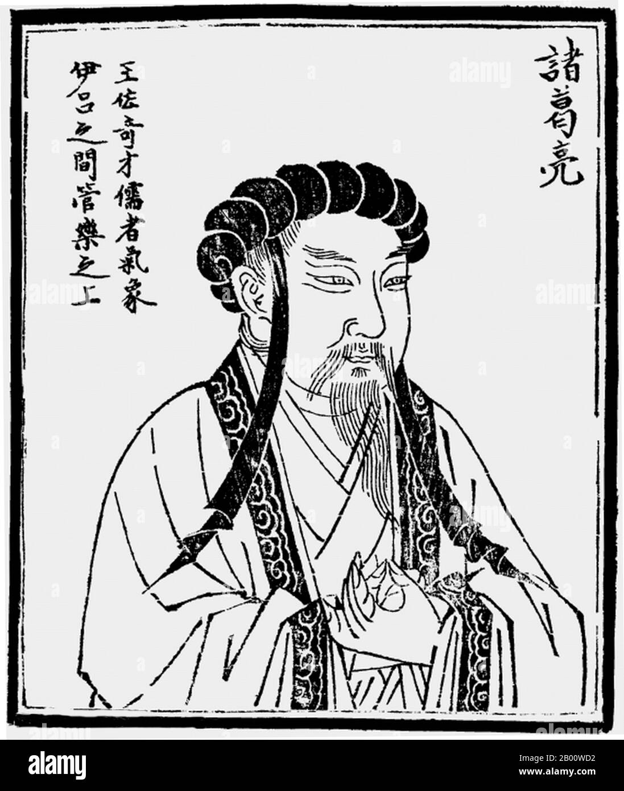
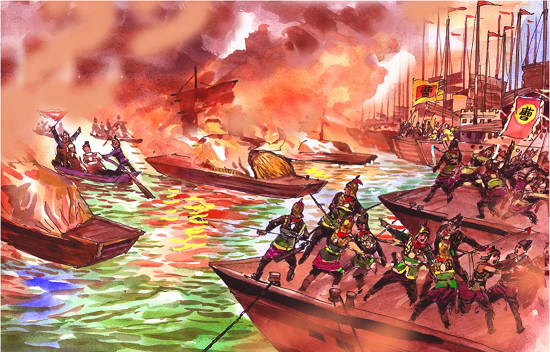

An analysis of Chinese military history, statecraft, and strategy during the Three Kingdoms era.
This period provides fascinating case studies in logistical planning, alliance management, and resource allocation. By analyzing the structural advantages of Cao Wei against the geographic defenses of Shu Han and Eastern Wu, we can draw parallels to modern strategic modeling.
The era was divided among Cao Wei, Shu Han, and Eastern Wu.
| Key Figures of the Three Kingdoms | ||
|---|---|---|
| State | Founder | Notable Strategist |
| Cao Wei | Cao Cao | Sima Yi |
| Shu Han | Liu Bei | Zhuge Liang |
| Eastern Wu | Sun Quan | Zhou Yu |


